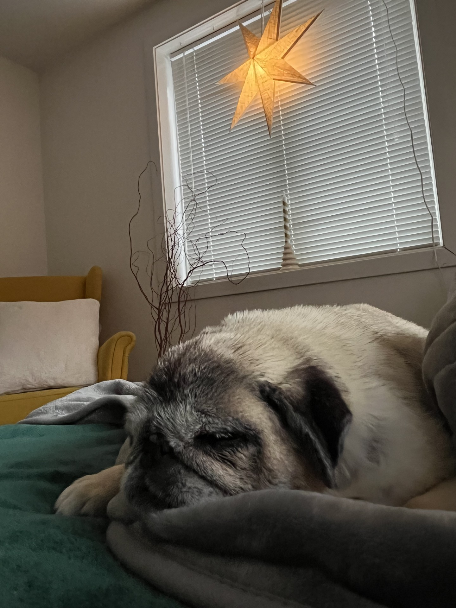
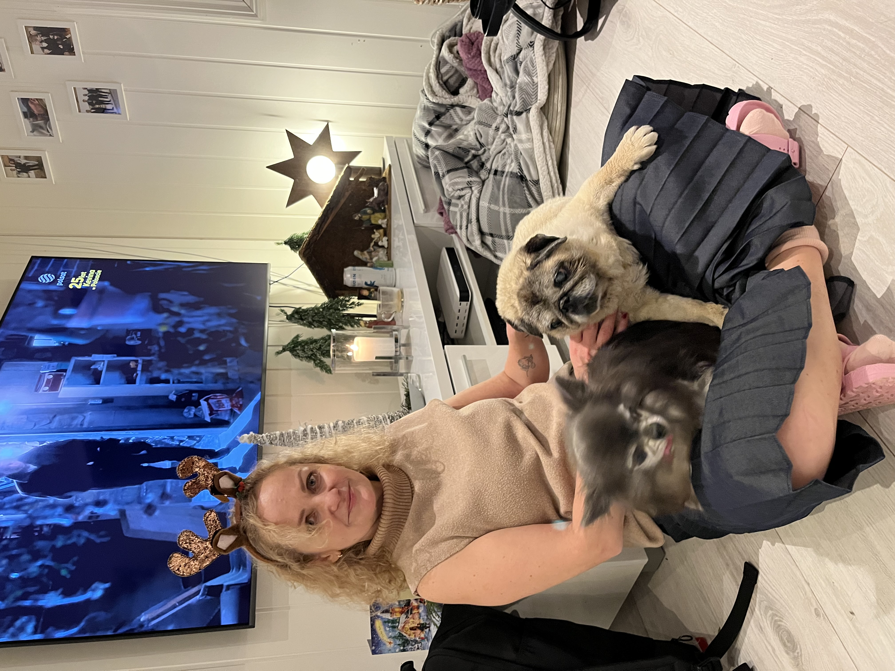
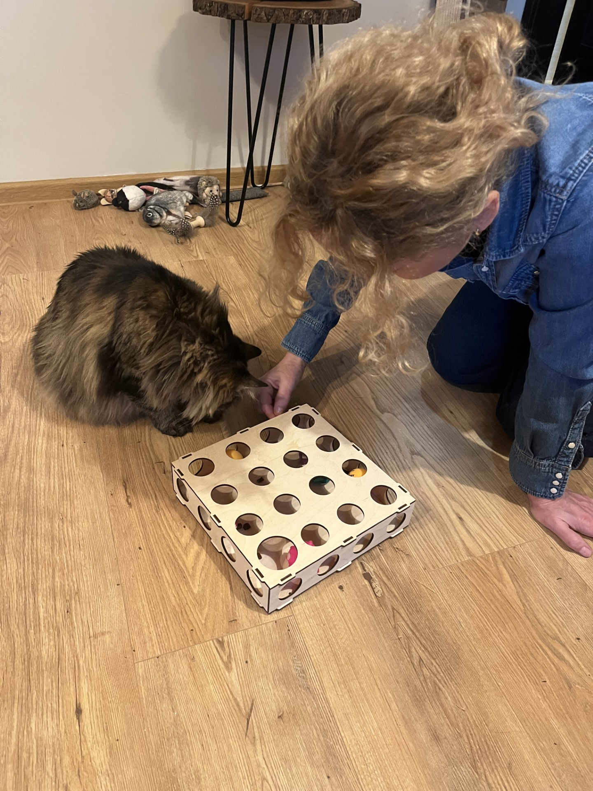

|
|
 |
About me
|
My name is Izabela Dec and I am a professional pet sitter and a pet groomer – link I love and have a lot of respect for all living creatures. I have a special connection with dogs, especially those old ones. I have decided to turn my hobby into full-time occupation and this is how Cuddle Bay was born. I want to focus and dedicate my time and heart to our furry, four-legged friends. |
 |
|  |
I adopted 3 dogs, all rescued from illegal breeding, Marzenka the pug, Lusia the pug and chihuahua gentleman Gucio. Sadly, Marzenka and Lusia are enjoying each others company over the rainbow bridge. Together with Gucio, we invite you to our cozy, pet friendly zone at Cuddle Bay in Oslo. Cuddly Bay is not just a place, above all it is a state of mind where the animals’well-being and respect are the top priority.😊 |
Interested? Please refer to “Offer” section - link
Pet care services |
Pet Hotel |
|
|
Cuddle Bay for your loved ones. Small, cozy space with individual approach to each pet. Max 4 pets in care at the same time. I provide pet care at my home, and I dedicate 100% of my time to my pet clients. I am a certified pet sitter from COAPE (Centre of Applied Pet Ethology) - link Safety, respect and a lot of cuddles guaranteed. |
|
decizabela25@gmail.com Mobile: +47 405 78 988 Instagram: Facebook: CUDDLE BAY - PET CARE Izabela Dec Pilestredet 100C, 201 0358, Oslo Org.number: 934808932 |